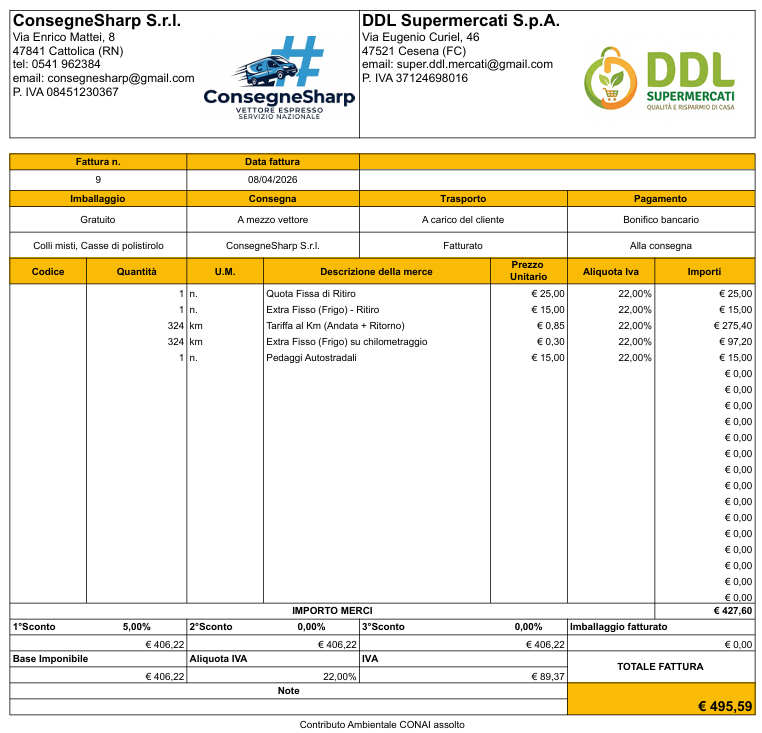
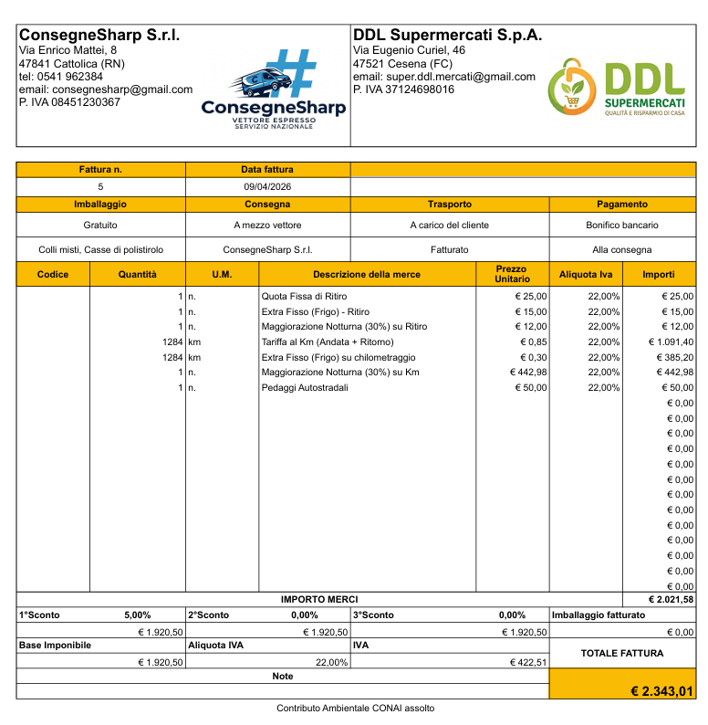
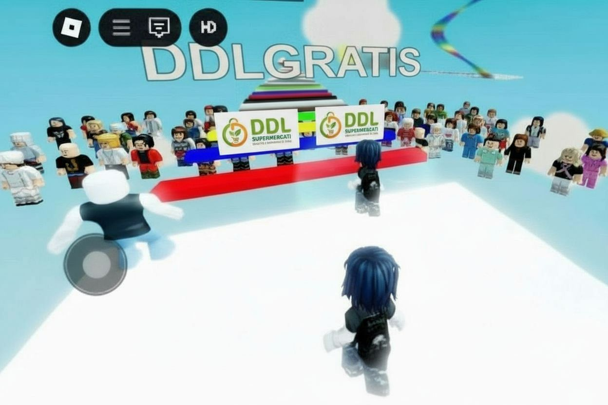

Mappa Interattiva Flusso Merci
Monitoraggio della catena di approvvigionamento: dai fornitori al cliente finale.
Fât Ben Trasformazioni Agroalimentari
Ordine vini, conserve, salumi e formaggi (Totale: 5.637,14 €).
Cronistoria Rapporti Commerciali:
La fornitura inizia il 7 aprile 2026, quando DDL Supermercati invia un ordine a Fât Ben Trasformazioni Agroalimentari per il riassortimento dei reparti cantina e dispense. Nello specifico vengono richiesti 204 litri di vino (tra cui Sangiovese DOC e Spumante Moscato Dolce) e 340 Kg tra conserve (Passata di Pomodoro, Olio) e latticini (Squacquerone 20kg, Ricotta 15kg, Grana 20kg). Fât Ben fornisce un preventivo finale e DDL conferma l'ordine apprezzando il 10% di sconto sul volume, scegliendo di provvedere con bonifico anticipato. In risposta alla richiesta dei dati fiscali, DDL trasmette tutto tempestivamente. L'8 aprile Fât Ben emette la Fattura Elettronica di cortesia n. 1 a saldo di € 5.637,14. Nello stesso giorno, DDL effettua il bonifico SEPA presso Intesa Sanpaolo e trasmette la ricevuta. Fât Ben conclude l'iter preparando il carico provvisto di DDT n. 1 (datato 07/04/2026).
- 07 Apr 2026: Invio ordine per 204 L di vino e superalcolici assortiti (Sangiovese, Spumante, Bianco, Rosso) e 340 Kg di dispense e latticini (Passate, Conserve, Salame, Squacquerone, Ricotta, Grana).
- 07 Apr 2026: Fât Ben preventiva il totale con uno sconto quantità del 10%. DDL risponde confermando e richiede le coordinate per un Bonifico Anticipato. DDL annuncia l'arrivo del vettore ConsegneSharp e fornisce i dati per la fatturazione elettronica.
- 08 Apr 2026: Fât Ben invia la Fattura Elettronica di cortesia n. 1 per l'importo di 5.637,14€. DDL salda tempestivamente tramite bonifico SEPA da Intesa Sanpaolo e trasmette la ricevuta contabile.
- 08 Apr 2026: Fât Ben prepara il carico con il DDT n. 1 del 07/04 a copertura dei beni ed annuncia al fornitore e al vettore la predisposizione dei pallet. DDL conferma la corretta ricezione del DDT n. 1.
ConsegneSharp Srl
Trasporto prodotti Fât Ben verso Polo Logistico DDL (Costo: 495,59 €).
Cronistoria Logistica:
Il 7 aprile 2026, contestualmente all'accordo con il fornitore, DDL contatta ConsegneSharp Srl per prenotare un trasporto di 550kg in partenza da Via Fossalta (Cesena) verso il polo di Piacenza. DDL richiede espressamente un mezzo refrigerato per garantire la catena del freddo ai formaggi. Sharp formula un preventivo di € 521,67 offrendo uno sconto del 5% in caso di pagamento alla consegna. DDL accetta la promozione, chiudendo l'importo totale a € 495,59 netti e fornendo tutti i dati di ritiro. Sharp comunica l'assegnazione dell'incarico alla conducente Carmen Monfry a bordo del Furgone Compatto (Targa: FG 145 GT). L'8 aprile, completato il prelievo, Sharp conferisce la copia della fattura emessa applicando il DDT n.1 del fornitore alla tratta.
- 07 Apr 2026: DDL contatta Sharp per la tratta fresca da Via Fossalta (Cesena) a Piacenza, per un carico misto stimato di 550kg. Assoluta urgenza su furgone refrigerato a motivo della presenza di formaggi come Squacquerone e Ricotta.
- 07 Apr 2026: Sharp formula il preventivo a € 521,67. Nelle mail successive, Sharp propone ed applica ufficialmente un 5% di sconto a fronte di saldo contanti al ritiro. Nuova tariffa: 495,59€.
- 07 Apr 2026: DDL accetta lo sconto. Sharp dirama i riferimenti per il carico: conducente Carmen Monfry a bordo del Furgone Compatto (Targa: FG 145 GT).
- 08 Apr 2026: Sharp fornisce copia della fattura emessa post ritiro applicando il DDT n.1 del fornitore, confermando la presa in carico e il viaggio verso Piacenza.
- 08 Apr 2026: DDL riceve la fattura e dispone un bonifico SEPA di € 495,59 a favore di Sharp, trasmettendo a Sharp la ricevuta bancaria.
📎 Documenti Allegati

Fattura SharpAzienda Agricola Giardino Delle Cozze
Ordine di ~550kg di Ortofrutta e Pescheria (Totale: 777,40 €).
Cronistoria Rapporti Commerciali:
La relazione commerciale decolla il 7 aprile 2026 con un consistente ordine di approvvigionamento di ortofrutta e ittico: centinaia di chili di vegetali e numerosi prodotti ittici come Cozze. Giardino Delle Cozze risponde con una quotazione netta di € 727,25. Seppur l'ammontare rimanga inferiore alla soglia imposta per acquisire forti scontistiche, DDL accetta l'ordine proponendo un bonifico anticipato. Il CEO Anthony The Pink e il commerciale Peter Roundabout forniscono l'IBAN della Banca Popolare di Puglia e Basilicata rimarcando future partnership agevolate al crescere dei volumi. DDL invia la copia della contabile attestante l'avvenuto pagamento. Giardino Delle Cozze chiude la dinamica commerciale trasmettendo la Fattura Immediata n. 515.
- 07 Apr 2026: DDL innesca la conversazione inviando un imponente ordine per Patate, Carote, Fragole e Cozze vive, confermato formalmente da Giardino Delle Cozze a € 727,25 nette.
- 07 Apr 2026: Il commerciale dell'azienda e il CEO Anthony The Pink precisano la mancata applicazione dello sconto volume ma si impegnano a partnership in futuro. Viene diramato IBAN di Banca Pop. di Puglia per saldare i conti.
- 07 Apr 2026: Immediata reazione DDL: Dati fiscali e copia CRO/Contabile del bonifico inviati per attestare il pagamento.
- 07 Apr 2026: Giardino Delle Cozze emette e inoltra Fattura Immediata n. 515. Raccomanda massima accortezza del vettore sul mantenimento della catena del freddo per via della carica ittica infetta presente (Cozze).
- 08 Apr 2026: L'Ufficio Spedizioni di Giardino Delle Cozze invia in allegato il DDT definitivo per le spedizioni verso Piacenza.
ConsegneSharp Srl
Trasporto refrigerato per freschi da Giardino Delle Cozze (Costo: 2.343,01 €).
Cronistoria Logistica:
Per gestire la fornitura partita dalla Puglia, il 7 aprile 2026 DDL sottomette un'ulteriore richiesta di disponibilità verso la segreteria logistica di ConsegneSharp. Viene specificato un carico stimato in 550kg, ribadendo perentoriamente la necessità di una vera e propria cella frigorifera per contrastare il deperimento dei prodotti. Il vettore quantifica prima il tutto a € 2.466,33 introducendo di nuovo il meccanismo del 5% di sconto a vista. Il prezzo scontato di bilanciamento si attesta a € 2.343,01, ratificato quasi istantaneamente da DDL. Sharp designa definitivamente la gestione al proprio mezzo targato HC482YV e nomina alla conduzione del carico la trasportatrice Maria Addolorata (+39 3519239102).
- 07 Apr 2026: DDL stacca la richiesta di spedizione pesante verso Sharp: Foggia (Sud Italia) per Piacenza con obbligo cabina refrigerata ed assetto deperibile.
- 07 Apr 2026: Primo preventivo elaborato ad € 2.466,33. Nuovamente discusso in 3 veloci email lo status del pagamento a vista e confermato 5% di sconto finale a quota € 2.343,01.
- 07 Apr 2026: DDL accetta i termini inviando referenti di carico (Miroslav e Peter). Sharp chiude la discussione registrando formale vettura pesante (Targa: HC482YV) operata dalla fidatissima Maria Addolorata (+39 3519239102).
- 08 Apr 2026: DDL trasmette a Sharp il DDT emesso da Il Giardino delle Cozze per la conducente. Sharp invia la sua fattura e DDL esegue il saldo di € 2.343,01 inviando la contabile.
📎 Documenti Allegati

Fattura ConsegneSharp (Foggia)Ristorante Patacca Burdel
Fornitura B2B: Squacquerone, Sangiovese, Salame, Cozze (Totale: 6.213,68 €).
Cronistoria Rapporti Commerciali (B2B):
Il 7 aprile 2026, la trattativa con Matteo Angiolillo (Ristorante Patacca Burdel) si apre con una laconica richiesta di listino merci B2B. DDL risponde allegando tutte e 34 le referenze prezzate, imponendo regole stringenti: merce venduta puramente in formula Ex-Works limitatamente ritirabile al Polo Logistico di Piacenza, vietando ogni genere di scarico a domicilio. Patacca Burdel conferma il disinteresse logistico ed ordina ingenti quote merce (fra cui 100 bottiglie di Sangiovese e 67kg di Salame Romagnolo). DDL redige il bilancio analitico dell'ordine che matura in € 5.399,20 d'imponibile per chiudersi ad un gravato di € 6.213,68 IVA compresa. Il cliente provvede tempestivamente all'accredito sull'IBAN di Intesa Sanpaolo ed attende le documentazioni fiscali conferendo l'incarico di scarico ad un trasportatore terzo.
- 07 Apr 2026: Dopo una sbrigativa richiesta listino inviata da Matteo Angiolillo allo shop supermercato, il polo direzionale ribalta il listino Ex-Works con toni pragmatici chiarendo il divieto assoluto a fornire consegne a domicilio e dettando fermi vincoli di prelievo.
- 07 Apr 2026: Patacca Burdel ignora la premessa ed ordina in volume 100 vini e decine di Kg di cibi. Prezzo imponibile sbrigativo a € 5.399 più una tassa iva di oltre € 800 per 6.213,68 totali. DDL pre-approva e fornisce coordinate IBAN a Matteo.
- 08 Apr 2026: Patacca Burdel attesta il pagamento e comunica che un proprio vettore andrà presto a svuotare le richieste a Piacenza. DDL reclama dati del Trasportatore per procedere ai DDT legali. In serata, DDL spedisce Fattura e DDT.
Ristorante Patacca Burdel (Nuovo Ordine)
Ordine di 50 bottiglie di Passata di Pomodoro.
Cronistoria Rapporti Commerciali (B2B):
L'8 aprile 2026, il signor Matteo Angiolillo invia un nuovo ordine via email dal Ristorante Patacca Burdel per 50 bottiglie di Passata di Pomodoro. Successivamente conferma il pagamento relativo al saldo dell'ordine e il 9 aprile DDL ringrazia formalmente il signor Angiolillo per essere passato di persona in azienda a firmare la documentazione, allegando i file di Fattura e DDT per il nuovo carico.
- 08 Apr 2026: Matteo Angiolillo invia un nuovo ordine specificando la volontà di acquistare 50 bottiglie di Passata di Pomodoro e inoltra conferma di bonifico via Intesa Sanpaolo.
- 09 Apr 2026: Il commerciale Mattia Cincotta di DDL invia la copia in PDF di Fattura ed il DDT alla contabilità del cliente per chiudere il nuovo contratto.
Griglia Tant
Minaccia alla stabilità aziendale.
Dettagli Imprevisto/Security Log:
Fuori dalle consuete logiche commerciali, il 7 aprile 2026 (ore 16:22) i filtri posta di DDL intercettano un'anomalia "security" inviata dal mittente anomalo "tantgriglia@gmail.com". Sotto l'oggetto di posta "l'avete voluto voi", il mittente dirama minacce sovversive citando testualmente "Preparatevi a ricevere una bomba nel vostro supermercato... :3" con tanto di allegato grafico incorporato. Il messaggio viene contestualizzato all'interno delle prassi di validazione minaccia per le security operations della logistica.
- 07 Apr 2026 (16:22): Registrata un'email classificata come potenziale minaccia terroristica da "tantgriglia@gmail.com".
- Contenuto Ostile: Messaggio conciso ("Preparatevi a ricevere una bomba nel vostro supermercato... :3") incrociato con un allegato mediatico PNG.
- Stato Gestione: Valutazione minaccia in perimetro di simulazione di sicurezza logistica, attivate verifiche standard sulle spedizioni in ingresso alle banchine in attesa di ulteriori riscontri.
📎 Documenti Allegati

DDL GRATIS